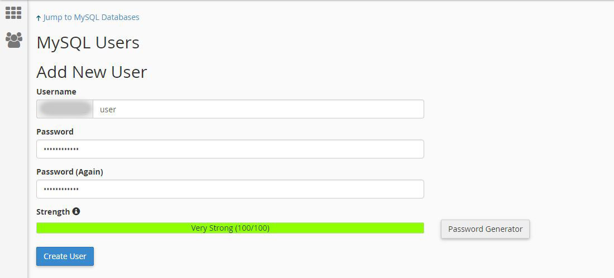
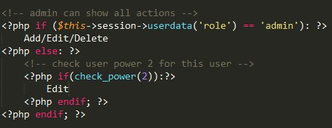

“Codeigniter Material + Bootstrap 4 admin integration with user & role management ” Documentation by “Macrotech” v 1.0
“Codeigniter Material + Bootstrap 4 admin integration with user & role management”
Created: 04.03.2018
By: Macrotech
Email: macrotech.envato@gmail.com
Thank you for purchasing my script for your project. If you have any questions that are beyond the scope of this help file, please feel free to email via my user page contact form here. Thanks so much!
Table of Contents
1) Introduction - top
Metrovic is a Ultimate Codeigniter Material + Bootstrap 4 integrated admin template for any project. It comes with User & Role management, unlimited user permissions with ajax authentication. I have most common features with lot of premium material and boostrap 4 forms, tables, inbox, invoices, ui elements, maps, charts and many more options. It will help you to build Admin panel, CMS, Employee management, CRM, or any backend administrator System. You will get all components in this template.
Technologies used:- PHP CodeIgniter 3
- HTML 5
- CSS (Bootstrap 4)
- JQUERY
- AJAX
- Latest CodeIgniter 3.1.7
- Bootstrap 4 & Material Design
- Easy Integration & Customization
- Standared & clean code
- Fully Responsive Design
- User management
- User role management with unlimited permissions
- Different User Access Level (Admin and User)
- Activate or deactivate user Accounts
- Data export with(copy, csv, pdf, excel and print)
- Database backup option
- Ajax secure Authentication
- Jquery Data tables
- Jquery form validations
- Ajax pagination with advanced search filter
- Sweetalert popup notification with ajax
- Detailed Documentation with commented code
- Totally Secure System
- Runs on PHP 5.5+ (and PHP 7)
Integrated Features:
- Form Basic Layout
- Form Addons
- Form Material
- Form Validation
- Basic Tables
- Table Layouts
- Data Tables
- Editable Table
- Cards
- Buttons
- Modals
- Tab
- Tooltip stylish
- Sweet Alert
- Notification
- Timeline
- Typography
- Bootstrap Ui
- Blank page
- Login
- Register
- Lockscreen
- Recover password
- Profile page
- Invoice
- Error Pages
- Google Maps
- Vector Maps
- Morris Chart
- Chartjs
- Calendar
- Widgets
- Contact / Employee
Forms
Tables
Ui Elements
Pages
Maps
Chart
Widgets
Security:
There are various mechanisms to secure application. These mechanisms are:
- Cross-Site Request Forgery (CSRF) Prevention
- Cross-Site Scripting (XSS) Prevention
Requirements:
There are some requirements to work on your server. These requirements are:
- PHP >= 5.5+ (and PHP 7)
2) Install - top
To Install this project:
Note: Please check your PHP version before installing. In order to work properly, your PHP version should be at least 5.5. We recommend PHP 5.6 or PHP 7.0.
1. Create a new Database with user that has all permissions.- Go to Cpanel and Click MySQL® Databases

- Create New Database

- Add New User
 - Add User To Database

- Set User Permissions

3. Import
database.sql file3. Configure database connection
Goto the extract folder and Find the file: application/config/database.php .
'hostname' => 'your_host_name',
'username' => 'your_username',
'password' => 'your_password',
'database' => 'your_database_name'
4. Run project in your browser.
Note: still now you cannot run your project please contact us.
3) Quick Start - top
After run project, you will be see the login page like this.
For access use this:
username: admin
password: admin
After successfuly login, you will see the "Admin Panel".
4) User Management - top
'user' section from dashboard sideber you can add, edit, delete, active / deactive users.
✓ Add New User: From Dashboard > Add User : you can Add new users from this option.
✓ Manage All User: From Dashboard > All User you can Edit, Delete, Activate or Deactivate any users with data export & print option.
5) Users Role & power - top
When you add/edit an user you can set thier permissions for your restricted sections like Add, Edit, Delete etc..User > Add user power from dashboard sideber you can add user power here. Remember This power id will need to check user permissions for your restricted sections.

Default (Add, Edit, Delete) Power has been added in this project but if you need to add more custom permissions then you can use this code after add user power.

6) Credits - top
Macrotech CI CRUD uses the following libraries and assets:- CodeIgniter
- Bootstrap
- Marerial Pro Template
- Ajax
- Jquery
- Sweetalert
Macrotech